隋唐大一统与唐代文学的繁荣
隋唐五代文学 · 第一课 · 课堂实录
一、开篇与课程说明 00:55–03:47
00:55–01:05好了，上课铃打过了，我们就开始上课了。这个学期由我来为大家主讲我们中国文学的第三段。
01:05–02:30我们这段文学主要学习的是唐宋文学。所以这个可能对于大家来说相对是更加熟悉的一段文学史，从内容上讲，熟悉感增强了。但是因为有了一种熟悉感，有时候大家就会轻视他——明明我以前已经接触了很多的唐诗宋词，我对这段文学史可能是比较了解了。但是其实这里有一个问题就在于，可能大家之前对于唐诗宋词的认知，更多的是从单个的文本入手的，那么由这个文本牵涉到了和这个文本相关的一些作家、时代相关的一些内容。但是作为文学史的学习，我们更多的是要把这些大家曾经熟悉的文本，放在一个文学发展的进程过程之中，再来做一个重新的审视。所以我们当然也会涉及到大家所熟悉的一些经典、大家经典名篇，这个是绕不过去的一个话题。但是在这个基础上，我们也会再做一个拓展，尽量的帮助大家能够全面客观、深刻深入的认知唐宋文学发展的这样的一个全貌。所以我们这是这个学期课程学习小小的一个初衷。
02:32–03:47课前有几个要求，我先跟大家讲一下。一个，课是全程都是啊录像的，随时都可以网上巡课，如果要是因为这方面出了问题，你们要受批评，我同样也要受批评，所以我在课前现在做一个说明。其次，课堂上请大家不要玩手机。如果实在是你觉得这门课你不感兴趣，或者你觉得我讲的内容没意思，你想关注一些你更感兴趣的话题——允许大家在课堂上看课外书，但是不要玩手机。这是第二。第三就是因为我们是一个大班，所以我们相对在课堂上组织的一些活动，肯定不如小班的效果要好啊，因为小班人数相对比较少。但是依然希望大家能够积极踊跃的参与到这个课堂的互动之中。希望你们能够确实在这门课的学习过程中，哪怕有那么一点点小小的收获，有助于大家未来的职业选择。好了，我就说这些。那下面我们就正式的进入到了课堂。
二、隋唐大一统的建立 03:47–13:47
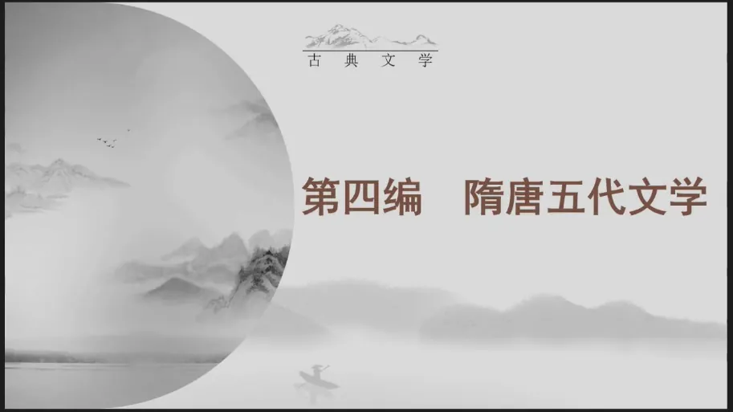
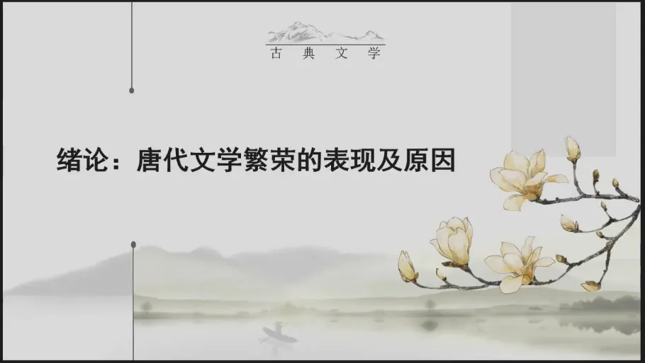
（一）隋唐文学在文学史上的位置
03:47–06:32我们来看。今天我们要讲到的一个内容其实是有关于隋唐文学的这样的一个概貌。这个时代我们要特意的提一下，就在于由隋至唐，特别是初盛唐时期，这是一个由分裂走向统一、因统一而主逐渐强盛的时代。而且唐代的文学相比较先唐的文学和唐以后的宋元明的文学相比而看，他恰好是处在了一个文学的转型准备区。
那大家不妨结合你们之前的一些语文的经验知识回想一下：在唐以前，你看大家学到先秦、到再到汉魏六朝，基本上以古诗为主，对不对？古诗、乐府这是当时诗歌创作的主体。但是在唐代出现了所谓的格律诗，五律、七律，而且这样的一种诗歌体式成为了唐以后最为主要的一种诗歌样式。你看这是一个变化。第二个，这个学期之后，大家进入到春季来进行元明清的学习，你们可能重点学的是什么呢？元杂剧、明传奇、明清的小说。这个杂剧就是所谓的戏曲。那么戏曲类的作品、小说类的作品，这都是属于叙事性的文学，他和诗歌为代表的言志抒情的文学有本质上的差别。所以这又是一个不同。所以和前面的不一样，和后面的依然不一样。但是前代文学古体、乐府，在唐代都出现了一些新变突破；那么唐代的文学之中，同样也孕育了在后世所出现的一些戏曲、小说相关的元素。所以我说他是处在了这样的一个转型的准备期。
所以唐代的文学不仅仅是诗歌和小说，虽然我们的讲解是以这个为主的，但是在此之外，它呈现了一种多样化、多面繁荣的这样的一个场景。
所以我们今天要讲到的第一个问题，我们就先来看一下唐代文学它的繁荣的表现及其相关的原因。
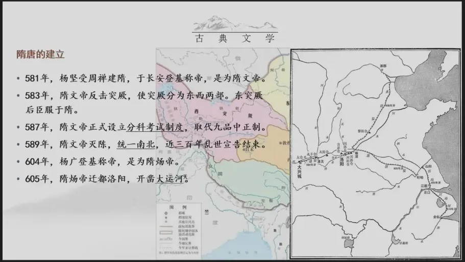
（二）隋的建立与统一
06:15–09:11当然唐代文学的繁荣和这个时代走向了统一是有关系的。所以在讲解到唐代文学的繁荣表现之前，我们先来看一下隋唐如何逐步的走向了一个大一统。
那么隋朝它建立于公元581年，这个时候杨坚受周禅而建立，隋，他最初是在长安登基，这就是著名的隋文帝。隋文帝他继续向北，所以实际上就是解除了北方的这个边患——他去攻打这个突厥，使得突厥就分为了东西两部，东突厥后来就臣服于隋。所以这相当于是把西北的边患先解决掉了。
好在公元587年的时候，隋文帝正式颁布这个法令，设立了分科考试制度，这也是大家所熟悉的后世所讲的科举制。也就是隋在人才选拔的方面，它是一个重要的分水岭。那么在隋以前，人才的选拔沿用的是九品中正制，是要把人按照等级划分，人才的选拔集中在贵族。所以大家看六朝时期的文学是很典型的贵族文学，很多的这些名家他是出身于门阀世家。但是从隋开始，这样的一种人才选拔制度被逐渐的打破。隋是建立了科举，唐是不断的完善这个科举，而科举制最终的定型是在宋代，它的繁荣期则是在明代；进入到清代，它就逐渐的衰落，而且表现出了一定的落后和不合理性。
好，那我们再来看，在公元589年的时候，这个时候隋文帝带兵南下，就灭掉了南朝的陈。自此以此为标志，这就实现了长期分裂的结束，实现了南北的统一。所以近三百年的一个乱世就宣告结束了，这个意义非常的重大。
08:34–09:11过去大家在学到魏晋南北朝文学的时候，你们看南朝文学的风格和北朝文学的风格是截然不同的，差别很大的。但是进入到了一个大一统的时代，那么这个截然不同的两种地域的风格，他们如何的交织才能真正的反映大一统的这样的一个宏大的气象？这实际上就是唐代文人所面临的一个重要命题。唐代文人在面对这个命题探索、探索、不断探索，花了将近一百年的时间。
（三）隋炀帝的两件大事与隋代的文学地位
09:11–11:20我们再来看，继隋文帝之后杨广登基称帝，这就是隋炀帝。隋炀帝他做了两件大事：一个，他把都城从长安迁到了洛阳。他为什么要迁到洛阳？因为当时他有他自己这个战略目标——他的父亲是把西北的边患解决了，这时候东北还有高句丽，就是我们今天所讲的朝鲜半岛这个地方，他想去攻打这里，征服这里。所以为了实现他这个战略目标，他去开凿了这个京杭大运河，他实际上就是想借这个水路，快速的实现这个物资、一些相关的东西能快速的运往北方。所以这是大家看到的这张图示，这就是隋炀帝所主持开凿的大运河。这个大运河它其实是把不同地区的水段，就是这个特定地区的水，通过修渠把它们串联在一起。所以有一些是自然形成的河流，有一些则是人工修的这个渠，让他引导他流向相应的方向。做了这两件事情：一个是迁都，一个是开凿大运河。
隋炀帝为了炫耀自己的功绩，还沉浸了南下、南巡视察。所以这些种种都是劳民伤财，以至于导致最后隋末爆发了大乱。所以大家看，隋在历史上存在的时间并不长，仅仅三十余年。所以在历史上，他可能是占有了一席之地，因为他推行了很多新的政治文化的制度；但是在文学史之中，它的存在感是很弱的，被视为了是初唐文学的一个序幕。
因为随着隋朝的灭亡，隋朝的很多旧臣就进入到了唐朝，继续在朝中担任一些职务。所以隋的文学，我们就不再做一个单独的主题来讲解，我们就把它视为是初唐文学的一个序幕，和初唐的诗歌就联系在一起了。
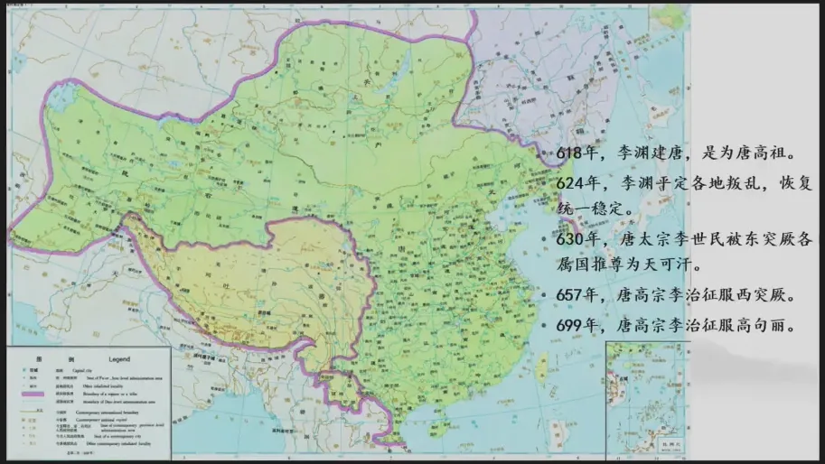
（四）唐的建立与疆域
11:20–13:47那我们来看，李渊他称帝代隋之后，就建立了唐。大家看到的这张图啊，这就是唐王朝的它的一个历史版图，可见这个疆域是非常之辽阔的。所以这是继汉之后的一个又一个大一统的这样的一个王朝，所以唐人喜欢以汉代唐，认为他们是可以和前朝的汉代的盛世是相媲美的。
好，我们来看。因为隋末爆发了各地频繁的爆发了叛乱，所以李渊称帝之后的第一件事情就是要先恢复社会的稳定。他平定了各地的叛乱。之后他的儿子李世民又被这个东突厥——就是我们刚才提到的臣服于隋代的东突厥——各属国推尊为天可汗。这个事情也是一个非常重要的标志。它标志了什么呢？可见在对待这个民族文化上、民族、少数民族政策上，唐代这是一种开放包容的态度。这和后来的元代就形成了一个鲜明的对比：后面大家讲到元代文学的时候，元代社会有一个突出的特点就是民族压迫制，就是他对于这个民族的管辖，他是采用了另一种方式。但是唐不一样，它是一种开放兼容的态度，这也对于时代的文学文化的发展产生了深刻的影响。
再到唐太宗的儿——李世民的儿子——高宗李治这里。你看唐高宗李治，可能大家对他的印象更深的是他的妻子这个武后武则天，实际上李治在他在任期间还是比较有作为的：一个是他征服了西突厥，这就把他的父辈乃至于隋代遗留下来的这个问题解决了；第二个他实现了隋炀帝的梦想，把高句丽也征服。所以大家看，这个时候从东北到西北，实际上都纳入到了唐王朝的版图之中。至此之后就是唐代，他在地域、在政治上真的都实现了真正意义上的大一统，就是进入到了一个盛世的时代。
好，所以我们在这样的一个时代背景之下，我们来看唐代文学它的一个繁荣，是具体是怎样的一种呈现呢。
三、唐代文学繁荣的表现 13:47–27:51
（一）诗歌：数量、质量与风格
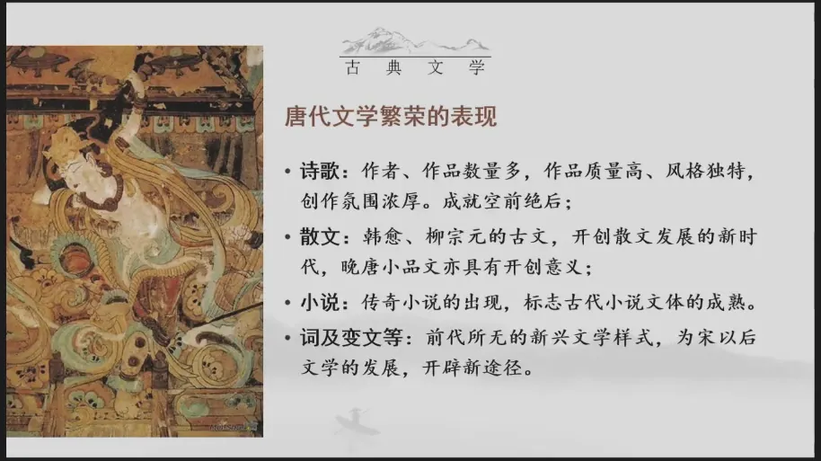
13:47–15:07唐代给我们印象最为深刻、而且能够代表了唐代文学一代标志的，主要是诗歌。所以诗歌，一个，唐代留存下来的作品的数量、作家的数量都非常多。我们现在能看到的最重要的、重量级的这个唐诗集，就是清人所编的《全唐诗》，对不对？在《全唐诗》之中共有九百卷，收录了两千余人，诗歌有近五万首——有四万八千多首。我们当今的学者陈尚君，复旦大学的陈尚君老师，他又补编了《全唐诗》，又补了一万多首。所以留存后世的这个唐诗有五万余首。
这五万余首的唐诗不仅是数量多、规模大，而且质量也非常的高，风格独特。所以这就使得唐诗的成就是空前绝后，既超越了他前代的诗歌，那同时他后来的诗歌也没有办法达到、企及他这样的一个艺术的高度。
（二）散文：骈文与古文的双线发展
15:06–19:59好，那么除了这个诗歌之外，我们再来看这个散文。唐诗的繁荣和它的突出的成就是没有办法代表全部的唐代文学的。唐代骈文和古文都获得了不同程度的发展。
可能我们过去在学习古文的时候，都涉及到了韩愈、柳宗元的古文。但是这个古文，它其实主要就是流行在韩愈、柳宗元生活的中唐时期。这个是由韩愈他发起倡导的一场复古儒学运动引发的，因为韩愈他是一个复古主义者。那到了中唐的时候，这个时候经历了安史之乱，整个唐代的政治文化他都需要革除积弊，要去重新的中兴、振兴。所以这个时候，韩愈他就想复兴儒学。复兴儒学的过程中，他就发现如果要想阐释儒家的一些理论，你用骈文体是没有办法进行的，因为骈文它是一种美文，它追求的是形式修辞之美。所以这个时候他就倡导要恢复先秦及两汉时期的单行散句的这种古文，我们后来就把它称之为叫做古文，实际上就是散体的文章。好，那么这种散体的文章就开创了散文发展的新时代。
但是它并不代表唐代散文发展的一个主流。唐代的这个散文，它是既包括这种单行散句的散体文，还有一类是什么呢？就是讲究对偶声韵的骈体文。这种文体是自汉末以来盛行于六朝时期的一种文体，它才是真正唐代主流的文体。
所以这个古文虽然是韩柳开创的，但是他什么时候才取代了骈文，成为了大家日常普遍使用的一种文体形式呢？一直要到了宋代，有欧阳修发起的北宋诗文革新运动。欧阳修因为他担任过类似于北宋教育部的部长，这个知礼部贡举，所以他是强行的推行，就通过这个行政命令强行的推行，而且去倡导这样的文风。所以在北宋的前中期，古文它就逐渐的普遍的流行起来，就逐渐的取代这个骈体文，骈体文大家就不再用于日常生活的表达了。但是在唐代，骈体文依然是它的主流。
那么在唐代的散文发展过程中，既有骈体的文，又有散体的文，他们二者之间其实也实现了一种交织：就是在骈文之中会夹杂一些散句，在散文之中又会有一些对偶。在唐代就出现了这样的一种创作的倾向。这种倾向后来被宋代的散文家就加以吸收化用。像大家所熟悉的欧阳修、范仲淹的《岳阳楼记》，你看《岳阳楼记》里边，它就是骈散结合，在语言上写有两段，不是写到这个岳阳楼不同时期的风景吗？用到了很多四字的句子，那是典型的骈体文的一种表达形式。
好，那么这个韩愈、柳宗元他们最初发起这样的一场古文运动，提倡的是文以明道，把这个文体文风的改革和贞元、元和年间的政治革新联系在了一起，就成为了中唐儒学复兴思潮的一个部分。中唐的古文运动也由此成为了先秦两汉之后又一个散体文创作的高潮。
在晚年的时候，还诞生了所谓的小品文。这个小品文，就是我们整个的中国古代的文体的命名，它不是一个很严密的系统。你看骈体、散体是从他表达的这个句式的形式上而言的，那么这个小品又是从它篇幅的长短上而言的，就是它命名的这个角度是不一样的。所谓的这个小品文，就是指一些短小的文章，这种短小的文章是可骈可散，这一类短小的文章大多是具有了一种讽刺的意味。所以晚唐时期的这种讽刺小品，以罗隐为代表的讽刺小品是很具有开创意义的。那这样的一种小品文，我们如果再往后延续，和后面的哪一个文学能去接在一起呢？就是晚明时期小品文的兴起，就是我们大家所熟悉的、我们绍兴晚明时期的重要的作家张岱，他写的那些短小的文章，实际上承接的就是晚唐这个小品文的传统。
（三）唐传奇：文言小说的成熟
19:59–23:02好，那我们再来看，在唐代文学发展的过程中，除了诗歌达到了空前绝后的高度、极度的繁荣，散文具有开创意义之外，在唐代还出现了新的小说文体，我们把它称之为叫做唐传奇。
好，大家注意，唐传奇是用文言写成的短篇小说，这和我们后来宋代所讲的白话是不一样的。而且用文言写成的小说，它大多都是中短篇，短篇居多，中篇很少。你像元末出现的这个《娇红记》，这是可以说是为文学史上比较著名的一个文言的中篇小说。为什么呢？这个文言这种种语言形式，愈简而意丰，就是它一个字就可以表示一个实词，和这个有很大的关系。
所以这唐代所出现的传奇小说，这是文言短篇小说，这是它第一个显著的特征。第二个就是唐代所出现的这个文言的短篇小说，它是有意识的去构、去很曲折的讲故事，注重这个人物的形象性格的塑造，就带有了一种很自觉的文学创作的观念和意识。所以唐传奇的出现，我们就把它视为是标志了中国古代小说文体的成熟。
这是相对于什么而言呢？是相对于大家之前所学过的魏晋的志怪、志人小说而言的。这个志人它其实不算是小说，它是一种笔记体，这种文体其实在中国古代也是有一个传统，它是一个独立的传统。志怪，它是具备了小说的雏形。但是大家去看干宝的《搜神记》，他在序里边讲，是我记录的这些奇异鬼怪的故事，我认为他是确有其事的；虽然我没有经历，我是道听途说，我是转述，但是我觉得他是属于实录。所以他保持了这种史家的观念，一种实录的观念来记述。因此六朝时期的这个志怪小说，用鲁迅先生的话讲就是粗陈梗概，他不注重这个情节的曲折、人物形象的塑造，他的目的是为了把这个事件的本身记述下来，让来大家了解这个事件的情况。所以这是和唐传奇的本质的区别。
所以进入到唐传奇的时代，它就是以自觉的创作的观念，其实就是虚构的意识运用在了文言小说之中，标志着小说文体的成熟，所以以此来反映人间的喜怒哀乐。所以唐传奇也是我们这个学期学习的内容之一。
（四）词：先有乐而后填词的新体
23:02–26:07好，我们再来看，在唐代还出现了一些前代所无的新型的文学样式。一个是词。在唐人的观念里，词就是诗的这样的一个变体，因为他也是要配乐演唱的。但是大家注意，诗歌和音乐的配合和词和音乐的配合有本质的区别：诗歌和音乐的关系是先有诗而后配乐，诗歌写作在先，然后乐工根据这个诗歌，它再配上相应的音乐；而词则是先有乐而后填词。这是一个本质上的区别。
也就是说，词在唐代，特别是中晚唐一直到两宋，它都是要受到音乐体制的限制的，那首先要音乐格式来限制它，为他的这个规模所限，主题都会有所限制。所以我们可能在文学史上会讲，苏轼如何开创了豪放词风，辛弃疾如何继承了这个豪放词风，这是文学进程中我们所总结概括的这样的一个线索。但事实上如果大家去翻阅《全宋词》的话，你们就会发现在宋词之中，言情的作品是占主导的。
我们不妨联系一下我们当下的现实的生活。我们在日常生活中，大家也有喜欢听流行音乐，适于放松。你们可以想想，其实大家听的歌基本上都是言情抒情类的作品可能为主。所以这就反映出了词这种文体他受到音乐体制的影响，它实际上是言情为主导的词，以婉约为宗，这是没有错的。所以这个词，伴随这个词的诞生，限定了它的这个格式的这种音乐，它和诗歌的音乐是不一样的。
在唐代，诗歌所运用的还属于清商乐的系统，这是六朝以来所形成的一个旧有的音乐系统。但是自唐代以来又出现了一个新的音乐系统，叫做宴乐。在过去我们在学文学常识的时候一定都提到过，它可以写作这个飞的燕子的燕，也可以写作宴会的宴。这个宴乐，一个是指它是从域外传来，它不是属于中原传统的音乐；还有一个是指它所应用的场合，都是在一些宴会酒饮的场合。这样的一种音乐形式的影响之下就产生了词。这个词最初就叫做曲子词，唐五代的曲子词；后来在曲子词的影响下才出现了文人词，然后才到了两宋词的这种辉煌。所以是民间的这种文学的活力引发了文人的兴趣，因为文人的这种参与，使得这种文体逐渐走向了经典的地位。这是很典型的一个文学发展的这样的一个规律。
（五）变文：讲唱文学与后世戏曲的源头
26:07–27:51除了词之外，大家再来看，唐代还出现了所谓的变文。什么叫做变文呢？这其实是一种佛教传经的方式，就是说这些僧人，他们会把这个佛经之中的一些教义、义理，以故事的形式广为布施，就是讲给老百姓听，以达到宣传的教育，这就形成了所谓的变文。那我们刚才提到的唐五代时期的民间曲子词，包括大批的变文，都主要保存在哪里呢？保存在敦煌文献之中。所以我们现在能看到的是五代时期的、唐五代时期的曲子词，民间的曲子词以及变文，都是啊来源于这种敦煌文献。
所以大家看下文，它是以故事的形式来宣传教育，是属于叙事性的文学了，当然是通过口头的这种叙事性的文学。我们前面提到的这个小说，它也是属于叙事性的文学。你看，这就为后世文学的发展开辟了新途径。所以唐传奇中的很多的小说，后来就演化成了元明时期戏曲作品的题材来源，就是为这个戏曲的创作提供了素材。
所以我们可以看到，唐代的文学可谓是呈现多样化的发展。所以我们千万不要把唐诗的成就就等同于唐代文学的成就，那唐诗只是唐代文学发展过程中最为显著的这样的一个标识。
四、唐代文学繁荣的原因 27:51–56:50
27:51–28:01那么为什么唐代的文学会取得这样繁荣的成就呢？我们也来对它的原因做一个系统的探究。一般我们对于文学现象的一个分析，肯定还是先要从其内部寻找相关的原因、因素。所以我们先把唐代的文学放置在了整个文学的发展过程来看，这应该是文学自身发展的一个重要的结果。
（一）内因：文学自身发展的结果 28:01–34:46
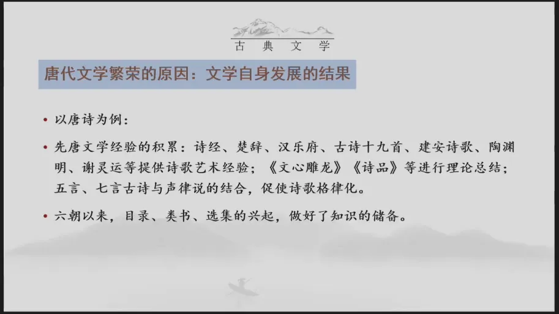
28:01–30:07为什么这么说？我们还是以唐诗为例，因为唐诗这是我们讲解文学史中的重中之重。
我们来看，先唐文学已经积累了大量的经验。我们的诗歌的脉络可以从诗骚开始梳理：诗骚之后，汉乐府，你看奠定了现实主义的精神、浪漫主义的精神；那么《古诗十九首》则开辟了文人抒情诗的传统；建安诗歌则是建立了诗歌之中的这种慷慨激昂之美，不同于《诗经》之中的温柔敦厚的中和之美；再到陶渊明、谢灵运，他们分别开创了文学史上的山水田园的题材——陶渊明则是代表了崇尚一种自然的风格，那谢灵运则是趋向于一种华丽的风格。他们都为诗歌的艺术提供了重要的经验，也成为了唐人所学习、借鉴的重要的对象。
在六朝时期，文艺理论开始兴起了，所以诞生了像《文心雕龙》这样一个系统性的理论著作，《诗品》这样的一个专门评析五言诗的一个批评理论专著。他们就为诗歌他的创作的动机以及诗歌的这种审美的经验进行了理论的总结。所以你看《诗品》它诞生在这个南朝，它倾向于的是要去肯定和弘扬华丽的诗风。你看南朝就是追求这种修辞浮华、浮靡的这样的一种诗风，很美，用简单讲就是很美。所以陶渊明在《诗品》之中仅仅是被列为了中品而已。
所以这里也有反映出了文学发展过程中很有意思的一个现象：你看陶渊明，他身后《诗品》是把它仅仅列为了中品，虽然钟嵘对它的评价也基本上是趋于肯定，基本上没有批评之语，但是仅把它列入中品，这个时代的一种审美氛围是相关的。但是经唐再到宋，陶渊明是一个不断被发现的过程。到了宋人那里，陶渊明就被奉为了是一个经典、文化精神的经典。所以这个唐——你像这个苏轼，他有这个和陶诗，所以这个对陶渊明的推崇的地位就非常的高。所以大家可以看到，就是文学的发展过程中，在这个接受的环节之中，它其实是一个动态变化的过程。
30:54–32:00好，我们插入一个话题，我们再来看在现代文学积累的还有什么经验呢。在唐前，五七言这两种古诗的形式基本上都已经定型了。《古诗十九首》这是代表了文人五言的抒情诗的成熟。那么曹丕的《燕歌行》是被视为是第一首文人创作的七言。这个七言古诗，七言的发展比较的滞后，所以曹丕之后几乎没有人在七言上再有突破。一直到了南朝刘宋时期的鲍照，他的《拟行路难》十八首之中再次出现了七言的形式，而且开始讲究运用声律押韵、隔句押韵。所以这是七言的一个突破。
所以这里大家就可以看出，发展到南朝时期，这个时候伴随着佛经的翻译、四声的发现、格律的形成、声律说在诗歌创作之中的运用，到初唐，很快律诗就定型了，首先是五律定型了。
32:00–34:46所以你看，就是先唐的文学发展过程中积累了大量的经验。散文大致也是这样的一个结果，也这样的一个发展的过程。所以散文大家也可以自行去梳理一下，它是如何从散化走向了这个骈化；进入到唐代，人们就开始对这种骈化进行反思，又有意识的追求散化。它也是这样一个发展过程，一定是建立在先前的文学经验的积累的基础之上。
好，我们再来看，自六朝以来，这个时候文学自觉的观念已经深入人心了。好，那么文学自觉之后，大家追求这种文学的审美性、它的华丽性，你要讲究对偶、铺排、用典。所以你怎么去掌握大量的典故呢？这就需要有一个知识库，就类似于我们今天使用这些什么 AI 智能体、这种搜索引擎、各种数据库，这个思维、思路是一样的。所以这个时候，伴随着这样的一种创作的观念和意识，目录、类书，类书就是资料性的这种整理，以及相关的选集开始大量的出现、兴起。这一类的书它从文献的意义上讲，它就是保存知识文化，所以做好了知识的储备。你比如说我要去用典，我只要通过类书去学习、查阅相应的典故，就可以有助于我的诗歌的创作。那么这种文学的选集，你像《诗品》、像《文选》，它都是可以为诗歌的创作提供一个经典的借鉴：什么样才是好的作品？那我们去翻一下选集就可以了。所以这个选本，就是我们中国古代非常独特的一种文学批评的形式。
好，此外我们再来看。过去我们学到南朝文学，你像永明体、宫体诗这一类的齐梁诗体，以他们为载体所形成的这种齐梁的诗风，他其实都是受到了宫廷统治者的支持和参与。所以这样的一种风气其实一直延续到了唐代，唐代的统治者也是非常的支持，甚至参与到了诗歌的创作之中。因此从南朝至唐，宫廷和贵族对于文学的提倡，也促进了这个诗歌的繁荣。这个力量不可小觑。你看元杂剧的兴起也是这么回事：就是因为元朝的统治者喜欢这样的一种文艺样式，这种文艺样式在民间又极为普遍，所以在元初的时候，它就迅速的兴起起来了。
（二）外因：社会安定、时代鼎盛 34:46–38:17
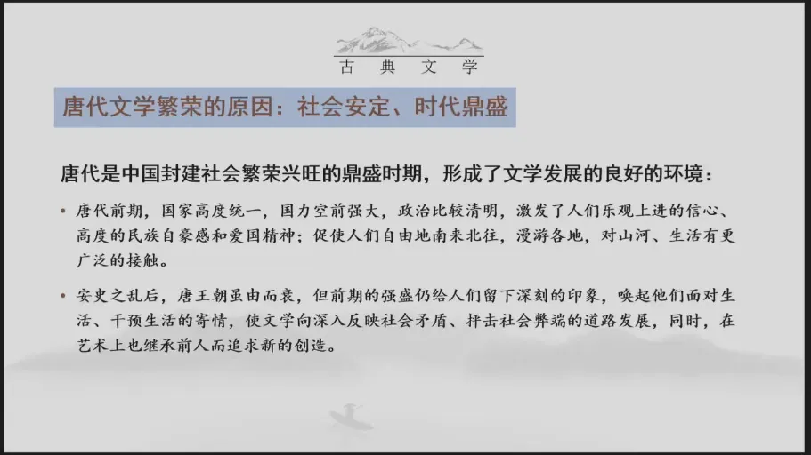
34:46–38:17好，我们再来看唐代文学繁荣的原因。我们前面是从文学自身的内部，相当于是在内因我们做了一个梳理，我们再来看外因，外在的环境对他的影响。那一定不外是社会的安定、时代的鼎盛，促进了这个时代的文学的繁荣，因为他就为文学的发展形成了一个良好的社会环境。
你看唐代的前期，这个主要是指的安史之乱之前，这个时候国家高度的统一，国力的空前的强盛，政治也比较清明，所以就激发了人们的乐观上进信心、高度的民族的自豪感和爱国的精神。同时南北的大一统也真正实现了，人们可以自由的南北往来。所以在初盛唐时期，这种诗人的这种漫游，这是一个非常普遍常见的一种行为方式。那最具有典型意义的不外乎就是李白，李白人生之中有两次历经十年的大漫游，真是走遍了祖国的大好河山。所以在这样的一种漫游的过程中，就使得诗人们对于自然山河以及不同地方的生活有了更广泛的接触，也激发了他们更多的创作灵感。
我们再来看安史之乱之后。安史之乱这场动乱是唐王朝的一个重要的转折点，但是动乱结束之后，唐王朝依然保持了一个大一统的这样的一个样貌，所以这个时候由盛而转衰，但是前期的强盛仍然给人们留下了深刻的印象，好，唤醒了他们面对这种生活、干预生活的激情。所以这个中唐时期的文学就是在盛唐文学的基础之上的一个新变和开拓。这种新变和开拓就在于：他们可能不能像盛唐人那么激情豪迈、那么自信洋溢，但是他们转向去揭露社会的弊病、去写他们个人的不平。
所以你看，以韩愈为代表形成了韩孟诗派，强调不平则鸣；那么以白居易、元稹为代表形成的新乐府——我们文学史上讲新乐府运动。新乐府是干嘛呢？就是学习汉乐府的精神，以乐府诗的形式批判、反映现实。你看，干预到现实生活，这就使得文学向深入反映社会矛盾、抨击社会弊病的道路发展。当然他们在艺术上也力求既继承又创新，所以这个韩愈他就进一步的发展的以文为诗，用写散文的方法来写作诗歌；那白居易则是追求一种非常平易通俗的诗风，所以他强调他的这个新乐府就是像歌谣一样，只要一读出来大家都能听得懂他写的是什么事情。所以你看，这和六朝时期这个诗歌语言的典雅华丽是截然不同的。
（三）政治思想的宽松 38:17–44:42
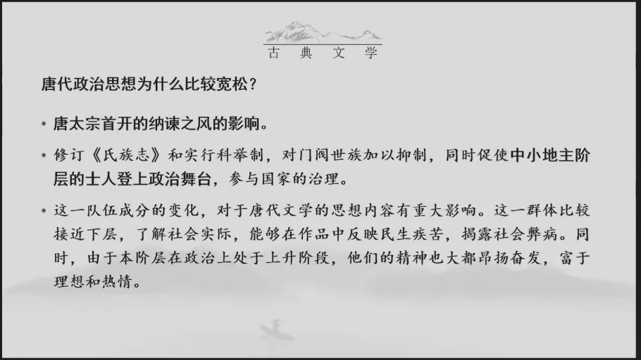
38:02–40:45那我们再来看，唐代这是一个政治思想比较宽松的一个时代。那为什么唐代的政治思想会比较的宽松呢？
首先这和唐太宗他首开的纳谏之风有很大的关系。唐太宗有一个著名的理论，他把君民关系比为了舟水的关系，所以水能载舟亦能覆舟，所以非常的看重民众的力量。因此他广泛的吸纳各方的意见。这种纳谏之风在整个唐代的政治史上都有一定的影响。当然历代的帝王未必有像唐太宗做的那么好，但是他们还是会接受祖辈的这样的一个祖训。
其次我们再来看，唐王朝这是一个士族逐渐的衰落，而庶族就是中下层的地主开始逐渐的登上历史舞台、主宰自身命运的一个时代。所以唐代修订了《氏族志》，这个修《氏族志》就规定了哪些姓、哪些地方的哪些姓，他们属于贵族的行列——他是为了实现这样一个目的。还有他继承了谁的科举制？那科举制其实就是人人平等，大家都有机会参与人才的选拔。所以这就对于门阀世族形成了一种抑制，同时促使中小地主阶层的士人登上了政治舞台，能够有机会参与到了国家的治理之中。
这样的一个队伍成分的变化，这对于唐代文学的思想内容有重要的影响。因为中下层的地主阶层他们更加的了解社会的实际，所以他们在文学作品之中能够强烈的反映这种社会现实的精神，就是他们这个批判的力度要更强，反映民生疾苦。同时因为科举制的实行，为他们提供了一个由下而上的这样的一个人生上升的通道，也使得他们的精神更加的昂扬奋发，赋予了理想和热情。当然这是正向的一个引导；负向带来的一个引导，他们也充满了很多人生的诗意和苦闷，所以这样的诗意和苦闷同样也被寄情在了诗歌之中。
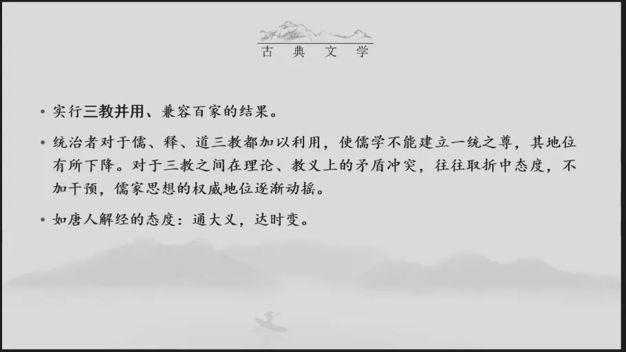
40:45–44:42好，还有一点、还有一点是什么呢？就是唐代他在思想上是采取一种兼容的态度，所以从唐代开始，思想文化界是三教并用，儒释道三家，统治者不是唯儒独尊。所以这是汉唐之间的区别。所以你看在汉代的时候，汉武帝为了加强大一统的中央集权，所以他就搞独尊儒术；但是唐代的统治者则是对于儒释道三教都是加以利用，所以儒学就没有办法建立一个一统之尊，它的地位就明显的有所下降。
但是其实三教之间，他们在理论教义上是有一定矛盾冲突的。所以你看李白在诗歌中，他就曾经嘲笑过这个孔子，曾经也提到过这个腐儒，就认为儒家的一些学子们一般教条。但是统治者对于这样的一种教义理论的冲突，则是往往是采用一种折中的办法，就是它相对比较的宽容，不对他们进行一个细致的、较真的这样的一个区别阐释，是一种折中的态度，也没有过多的干预。所以这就使得儒家思想的权威地位逐渐的动摇。
所以你看唐代的人也解经，但是唐人解经和汉人、宋人都不一样。你看唐人强调的是什么呢？通大义，就是我只要掌握这个经典的精神内核就可以了；达时变，那就是要结合这个实际情况，灵活的运用这个经典的精神内核。所以你看他就更加的宽容，更加的兼容并蓄。
我们再来看，唐人对于君臣大义、夫为妻纲——你看，这都是唐代儒家的一些在政治人文关系方面他的一些信条。那唐人对这些信条的态度是什么呢？你看在君臣大义上，唐人就没有那么绝对化。我们知道王维在安史乱期间，他曾经被迫接受了伪职，被押送到了洛阳。这件事情，在唐时，比如说杜甫听闻了这个消息之后，他在诗歌里就对王维表达了同情。王维同期的好友对于他的这样一种遭遇，也是认为他是可以谅解的，并不认为他接受了被迫的位置，就是在政治上有所辩解。你看这是唐人的一种看法。
再比如说这个夫为妻纲，我不知道大家有没有印象，有一段时间突然就流行，说在敦煌文献里发现了一个夫妻之间的离婚书，就是离婚之后，那就是祝福对方彼此安好，就是唐代的这个和离书。所以当时在网络上热炒，就说唐人的这个婚姻观如何的文明怎样。就是这个夫为妻纲，在唐人看来他也不是绝对化的。所以唐代的整个的文化的态度，它是比较宽容、比较通达的。特别是我刚才给大家举到的王维的这个例子，后面我们讲到王维的时候还会提到这一点。你看同代的人对他都表示了理解、同情，可以接受他的这种行为。但是相反，在两宋时期，朱熹就曾经写过一篇文章批评了王维，狠狠的批评了王维，认为王维又虚弱、又软弱、又虚伪，怎么能够做这样的事情呢？你看宋人他们对于这个君臣大义，就把它视为了一个天经地义的一个权威的信条了。所以这就反映出了一些差别。
（四）文献研读：《容斋随笔》“唐诗无讳避”条 44:42–46:26 ／ 50:37–52:03
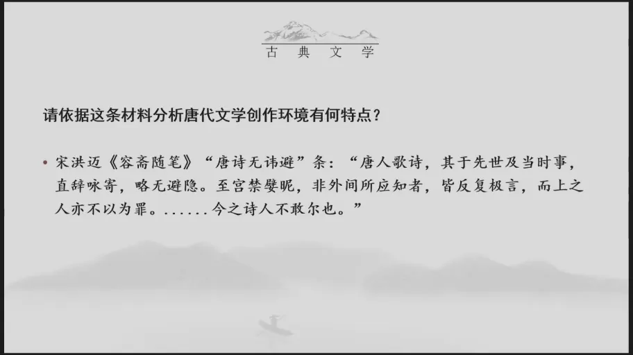
44:42–46:26好，那我们再来看。大家来看，这是这个宋代的洪迈，在这个《容斋随笔》之中——《容斋随笔》这是他写成的一个学术的随笔——有一条叫做“唐诗无讳避”。大家可以来读读这段话，你们来看。你看，唐人歌诗，至于先世及当时事啊，不管是前朝的历史还是当下的历史，直辞咏寄。我可以给大家举一个例子：
安史之乱爆发之后，安史之乱是爆发在公元756年的冬天，就是这一年的十二月，安禄山带领叛军攻破了长安城。那么在第二年，杜甫就被作为了战俘困守在了这个长安城中。所以到了第二年的春天，他跑到这个曲江边，看向对面的这个大明宫。当时唐明皇已经带着杨贵妃逃走了，在马嵬坡发生马嵬事变，所以最后唐玄宗就一个人跑到了成都。所以面对这样一个宫廷、一个春色、宫廷凄凉的景象，杜甫就写下了《哀江头》，这也是我们后面会讲到的一首杜甫新乐府的诗歌。
那《哀江头》里边他就提到了〔原音不清，存疑〕，略无避隐，完全不避讳。李杨在诗歌史上吟咏，大家最熟悉的作品是白居易的《长恨歌》，对不对？但白居易不是第一个写李杨诗的人，诗人是杜甫首先在《哀江头》里提到了，直书其事，略无避讳。所以这就反映了唐代诗人他们一个创作的这个环境。如果让你会用什么样的一个词语来概括呢？
〔课间休息 46:26–50:37〕
50:37–52:03好，我们接着来看。我们再来看洪迈他记述的这一条“唐诗无讳避”。你看，前面是讲了引用一些事件的时候，直是直成其事。其实大家从陈子昂的《感遇》三十八首中就可以见得这样的一个力度——后面我们会提到陈子昂的《感遇》三十八首。你看，至于宫闱中的一些秘事，宫禁嬖昵，非外间所应知者，你看本来都是属于一些密闻，或者说是一些不太好的一些消息，就反复极言。我自己猜测不卖这个，指的就是唐朝的一些帝王妃子之间的这些事情，所以反复极言，而上之人亦不以为罪。所以统治者听闻了这样的歌诗，也没有说要做一些怪罪或者是惩罚之事。
最后一句话尤为关键，我们讲，今之诗人不敢尔也。那对于在特别的讲究这种君臣纲常的两宋来说，这样的事情是不大会出现的。所以由此可以看出，唐代的文创作，他的文学创作环境相对是更加宽松的。所以这也是由于整个的思想文化的这样的一种宽松、宽容开放的态度所带来的。
（五）中外文化交流的发展 52:03–56:50
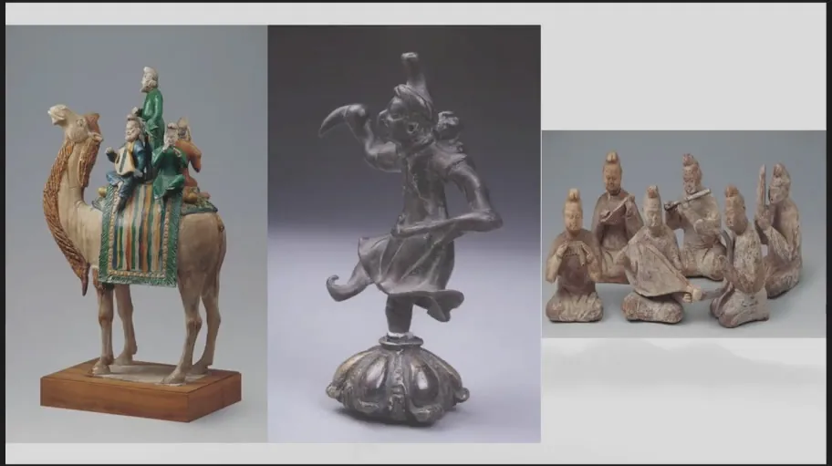
52:03–54:55那我们再来看，这是大家可以看到，唐代也是一个文化交流非常的频繁，特别是西域和中原的文化。所以这是目前的收藏在国家博物馆的一些唐代的文物。你看这是一个唐三彩，坐在骆驼背上的吃胡饼，这个胡人吃胡饼，这个大家可以看到就是典型的西域人的样貌。
大家看到中间的那张图片，你看来自西域的这种乐伎，他表演的一种很特殊的这种杂技，带着这样的一个很奇特的不同于中原的帽。那么大家再来看，这是啊坐座位，就是以坐的方式来演奏音乐的，这样的一个坐部伎，就是一个小型的这样的一个乐队，全部都是男性。因为这个唐代的音乐，它有一个变化，就是由站到坐，它分为了坐为主、站为次，坐为主、站为次。这是唐玄宗，因为他是一个音乐爱好者所搞的一个改革。所以这就反映出了唐代的这种音乐文化。而这种做事的这种音乐表演，他手里所拿的这个乐器，大家看有琵琶、有箜篌，这其实都是从西域传来的一些乐器。所以这几张图片就充分的说明，在唐代的时候，因为这种思想文化的这种宽松、这种开放，中外文化的交流也是非常频繁的。
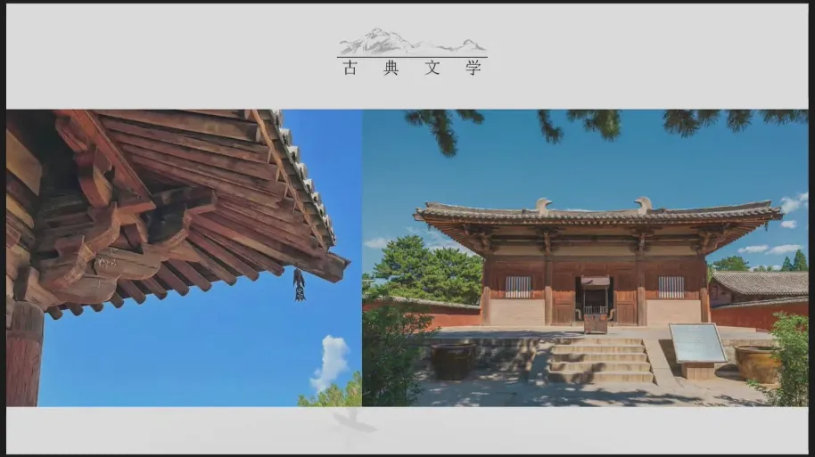
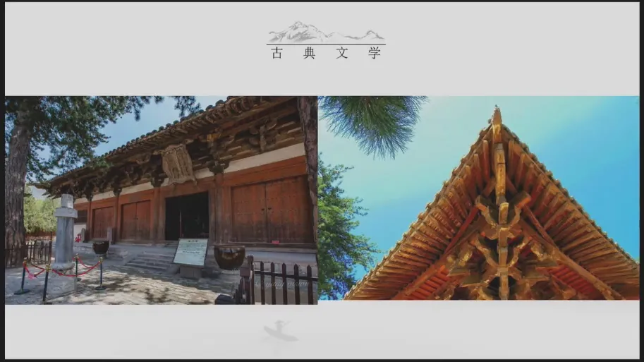
所以唐代的这些建筑是非常的恢宏大气的。大家现在看到的这个是仅存的唐代的木构。这一张是这个南禅寺、南禅寺的大殿，这个大殿是一个中晚唐时期的作品。这个是佛光寺，就是梁林夫妇他们在山西寻访古迹的时候所发现的，所以印证了国内也是有唐构〔唐代木构〕仅存的，打破了日本人说中国〔没有唐构〕的这样的一个论断。所以大家可以看到这个眼角，唐代的这样的一个建筑木构的方式也是非常的大气的。
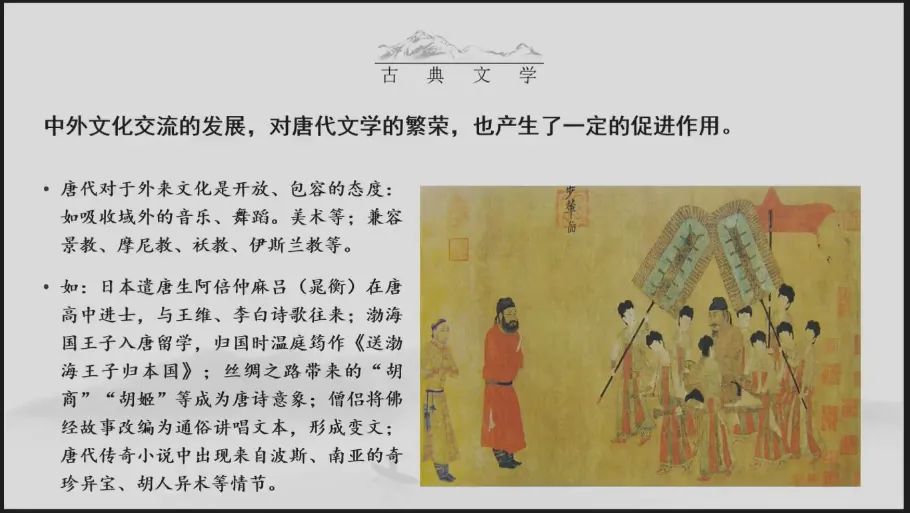
54:55–56:50所以中外文化的这种发展、交流、发展，对于唐代文学的繁荣也起到了一定的促进的作用。
不知道这幅图大家有没有印象？很著名的《步辇图》，外来的使者去参拜这个玄宗皇帝——这个太宗皇帝，说错了，唐太宗。所以这个时候这就反映出了对于外来的文化，唐代的同样是一种开放包容的态度。
前面我们看到的种种的文物，这是对于外来的音乐、舞蹈好的吸收。还有同时除了儒释道之外，兼容百家，你看有所谓的景教、摩尼教，这个摩尼教是来自于波斯地区，还有叫阿拉伯地区的伊斯兰教。所以这种多种异域的这种宗教，当时在唐代也有所流行。
好，我们再来举一些例子。大家可以看你们最熟悉的晁衡，李白不是写过一首《哭晁卿衡》吗？后来发现这是一个误会，以为他遇到海难，其实他的也获救了。他是一位日本的遣唐生，就是在这个唐代有大量的日本留学生来到唐王朝进行知识文化的学习。所以以唐为中心，实际上就构造了一个东亚的这种诗文化的传播圈，影响到了今天的日本、朝鲜半岛还有越南地区。
给你们看，这个渤海国的王子也曾经入唐留学，那归国的时候，晚唐的诗人温庭筠曾经作《送渤海王子归本国》。在丝绸之路上由西而东传而来的胡商、胡姬，这都成为了唐诗中的意象，李白的笔下就曾经有所描写。僧侣将佛经的故事改编成了这种通俗讲唱的文学，形成了变文，其实这也是西方、来自于西方的文化的一种影响。甚至在唐代的传奇小说之中，有啊来自于波斯、南亚的一些奇珍异宝、胡人的异术等情节。你看，这都是在这种中外文化交流的背景之下，对于文学创作的一种影响。
（六）以诗赋取士与行卷之风 56:50–01:01:47
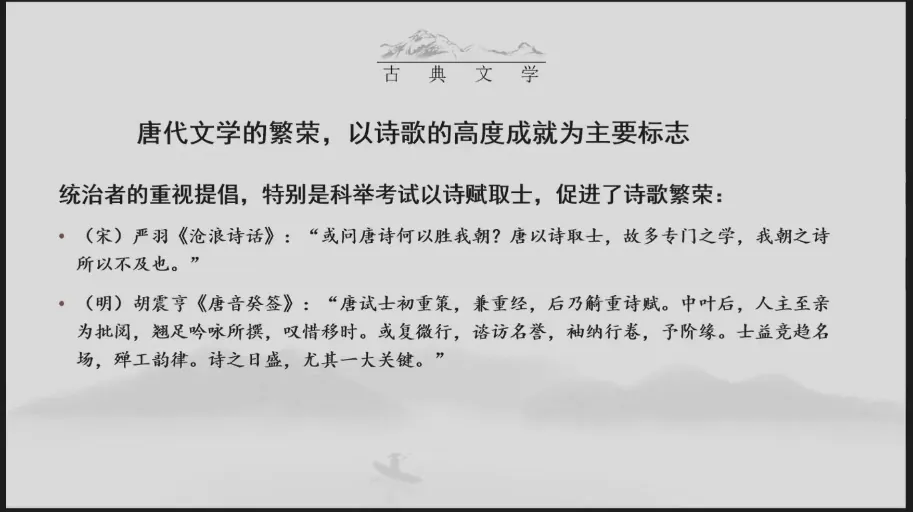
56:50–01:01:47唐代文学的繁荣是以诗歌的高度成就为主要标志，所以这也是我一再强调的：我们课堂上的学习的依然是以诗歌为主线。那为什么唐代的诗歌取得了如此显著的成绩呢？这可能和统治者的重视提倡，特别是在科举考试之中推行以诗赋取士有一定的关系。
所以这个严羽在《沧浪诗话》之中就讲到——你看宋代的人他们就力图通过诗歌文学上要争胜于唐，所以严羽的《沧浪诗话》，它是一个中唐的批评的诗话。所以他就在这个《沧浪诗话》中讲：或问唐诗何以胜我朝，那为什么唐代的诗歌要优越于宋代呢？唐以诗取士，故多专门之学，我朝之诗所以不及也。因为严羽他是要推崇唐诗，所以他说宋诗不如唐诗。但其实宋诗有宋诗的美。但是自唐诗形成一个独特的范式高峰之后，宋诗又成为了一个重要的范式。自宋以后，唐宋诗之争，这其实是我们文学史上的一个重要的话题。元代的人他是推崇唐诗，明代的人继承了元代的风格，对唐诗也是肯定比较的多。但是进入到了宋代——宋代就进入到了清代，清代的人则是支持宋诗，所以清代学宋的诗人要更多一些。
好，我们再来看，胡震亨在《唐音癸签》之中也讲到这样的一个现象，同一个现象他也做过相关的分析。唐试士初重策，兼重经，后乃〔觭〕重诗赋。你看，本来他们也是考这个文章的写作的，但是在文章的写作之中，慢慢就注意到了也要考察这种赋诗、文学的能力。中叶后，人主至亲为披阅，翘足吟咏所撰，叹惜移时。可叹，你看我〔原音不清〕就感慨，我没有遇到那样的时代。或复微行，咨访名誉，袖纳行卷，予阶缘。
好，这句话大家注意，这是讲到了唐代的又一个文化现象：唐代的科举考试是不无名的，就是这个主考官他是可以看到这个考生的姓名。后来到宋代就做了一个改革，所以宋代的这个科考就开始实行糊名制。因为不糊名，所以这些去纷纷参加科考的式子，他们就会有一个行为——自我的推荐，拿着他们写的这些诗文，拿着他们的一些文学的创作，就是能够代表他们自己优秀的这些成果，先去找到这个主考官进行推见，这就是所谓的咨访名誉、袖纳行卷。通过这样的一种行卷的方式，能够引起主考官的注意，获得他的青睐。所以士益竞趋名场，殚工韵律，所以大家都纷纷的要绞尽脑汁，让自己的诗歌写的更加的精美，也引起了主考官的第一时间的关注。诗之日盛，尤其一大关键。
好，所以在这里胡震亨就比严羽论述的要更深入一些。他讲到了不仅是因为重诗赋，而且在中诗赋的过程中，加上他不糊名，那么这些文人士子，他们就要去拜访、自我推荐主考官，由此而带来了所谓的行卷诗、行卷这样的一种文化方式、考试的文化方式。它不仅是引发了行卷诗，很多的中唐的士子，他们为了让自己的写作的文学作品能够引起主考官的关注，还要在前面附上一个离奇的故事，这就是所谓的传奇。所以唐传奇的兴起也有这方面的因素。
所以这个行卷它不仅促进了诗歌的繁荣，也促进了传奇的繁荣。因为这样的一种行卷诗，他主要就是为了表现这个文人的文学才能、驰骋他的才情，所以他追求的是要去进行新奇独特的艺术构思，这个对于提高诗歌的技巧是有一定促进作用的。当然这一类的诗可能从这个思想的深度上讲，未必有一些经典名篇那么影响深刻。
（七）其他艺术门类的繁荣 01:01:47–01:04:48
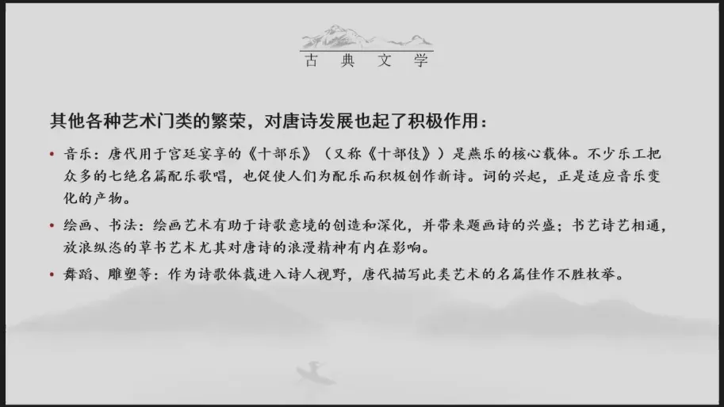
01:01:47–01:04:48好，那我们再来看其他一些艺术门类的繁荣，对唐诗的发展也起到了一个积极的作用。你比如说音乐。我们刚才提到了，在唐代的音乐有一个改革，就是过去由站和坐结合，那么在初唐的时候又确立了所谓的十部乐，又称十部伎。在这个十部乐中有一部就是称之为叫做燕乐，这个燕乐主要就是用在这个宴会的场合，它就成为了这个词兴起的一个重要的音乐体制。
在唐代还出现了很多的乐工，把众多的七绝名篇配乐歌唱。这样的一种现象在唐代文学界，它有一个专门的名词叫做唐声诗，就是可以配乐演唱的诗歌，又称为叫做唐声诗。这个声音就是从格律诗到词过渡的一个形式。你们大家可以看一下早期的这个词〔牌〕，你像很典型的《浣溪沙》，《浣溪沙》是不是基本上都是七言的句子为主？上片三句，下片三句，对不对？那你看，说明七言的这种句式，它就是从诗走向词的一个重要的过渡的一个载体。所以不少乐工就把七绝的名篇配乐演唱，也促使人们为了配乐而积极的创作新诗，词的兴起正是适应了这种音乐变化的一个产物。
此外，这种绘画、书法，它有助于深化诗歌的这种意境。你看王维的诗就被誉为是诗中有画、画中有诗，因为王维本身他也是一个画家、造诣很高的画家，可以说他是把绘画中的一些技巧，把它迁移到了诗歌的表现之中。在唐代，还出现了一个新的题材叫做题画诗，这也成为后来唐宋以后的一个诗歌创作的大宗。那么书艺诗艺相通，放浪纵恣的这种草书的艺术，他其实对于唐诗的浪漫的精神也有内在的影响，就是激发了这样的一种浪漫的激情。
那舞蹈、雕塑等等，他们也被作为了诗歌的素材，进入到了诗人的视野。所以唐代有很多去描写这种舞蹈的动作、场景、特定的雕塑，这类的诗歌是具有很高的文献的价值。所以大家可以看到，这样的一种艺术门类的繁荣，它对于唐诗的发展也起到了一个积极的作用。
五、唐诗发展的阶段性：四唐说的形成 01:04:48–01:10:17
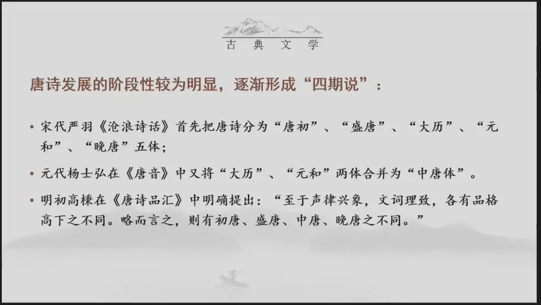
01:04:48–01:07:28那唐诗呢，它在其发展过程中，它的阶段性是比较明显的。所以这就构成了唐诗发展的一个学术史的建构，就是我们如果研究唐诗，该采用怎样的一个系统化的这种观点来进行关照。
那么严羽在这方面首先做出了贡献，他在《沧浪诗话》之中把唐诗分为了五体：唐初、盛唐、大历、元和、晚唐。我们来看，这个其中提到的“大历”，就是安史之乱刚刚结束、中唐的序幕还未拉开的这么一个特殊的时期。所以大历时期的诗人大多都经历过乱世、由盛转衰的这样的一个特殊的时代。所以严羽很敏锐，他的眼光很敏锐，他认为这个时期是一个特殊的时期，把他们单独放出来——“大历”。那大历之后的“元和”，这就是以韩愈、柳宗元、白居易等人为代表的中唐时期了。所以其实大家看严羽的这个五分法，已经带有了初盛中晚的这样一个雏形，只是他分的比较的细致。
所以在严羽的这个分类的基础之上，元代的这个杨士弘，他在一个唐诗的选本叫做《唐音》之中，他就把大历和元和这两体合并为叫做“中唐体”。你看杨士弘他就做了一个合并的工作，五体就变为了四体，对不对？好，再到了明初，高棅在他的唐诗选本《唐诗品汇》之中就明确的提出了：至于声律兴象，文词理致，各有品格高下之不同。略而言之，则有初唐、盛唐、中唐、晚唐之不同。高棅的这个《唐诗品汇》是一个很厉害的选本，后来清人的《全唐诗》是在这个本子的基础上形成的。所以大家看，经过了历代这些诗论家、文献学家他们不断的整理，我们的唐诗才得以保存下来这样的一个规模。
所以到高棅在《唐诗品汇》里，他就结合前人的这样的一些结论，明确的提出了初盛中晚，形成了唐诗的所谓的四段说。所以我们现在对于唐诗的一个学术史的考察，基本上都是遵循了这四段说的一个这样的一个看法。
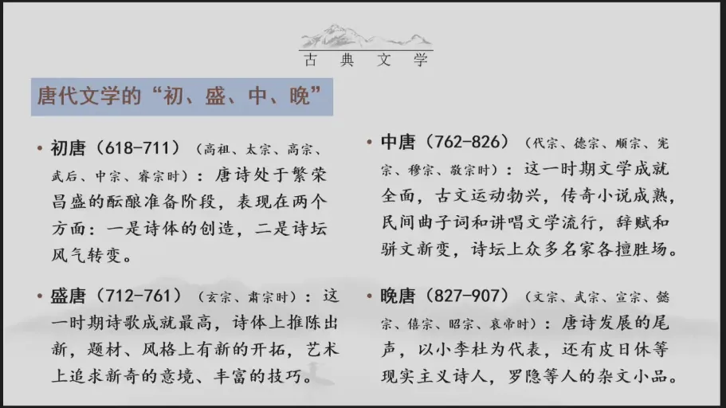
01:07:28–01:10:17这四段后来也被演化成了唐代文学发展的四个阶段。那我们具体的来看一下这四段的时间的断线，我们该怎么去断线呢？
首先这个初唐。初唐大概经历了有近百年的时间，所以北京大学的袁行霈先生曾经对于初唐时的发展有一个很形象的概括，叫做“百年徘徊”。它就是一个唐诗的酝酿期，这个时候它是处于一种繁荣昌盛的酝酿期，这种繁荣昌盛表现在两个方面：一个是诗体的创造，第二个是诗坛风气的转变。好，这两点也是我们学习初唐文学所要把握的两个重点。
初唐之后是盛唐。盛唐是以安史之乱为界，就是安史之乱之前玄宗皇帝在位的这段时间，这都是属于盛唐。这是整个唐代诗歌成就最高的一个时期。但是大家看啊，它的时间很短，从这个年限的断线上讲，它也就不过五十余年的时间。但是这五十余年在诗体上推陈出新，在题材和风格上都有新的开拓，在艺术上又追求了新奇的意境和丰富的技巧，涌现了众多的著名的诗人。
安史之乱结束之后，从大历年间开始，这是被视为是中唐文学的开端。所以中唐一直但是要到唐敬宗，以甘露之变为代表，这就是中唐。这一时期这是一个文学发展的全面开拓的时期。你看散文领域古文勃兴了；那么小说领域，传奇小说创作的高潮繁荣是集中在中唐；最早的一些曲子词、文人尝试填制的词体也是出现在中唐。所以中唐这是一个我们形象的讲全面开花的这么一个文学发展的时期。
好，那么晚唐，这是唐诗发展的一个尾声。在晚唐阶段代表性的作家首推所谓的小李杜，就是李商隐和杜牧。除此之外还有一些反映唐末战乱的一些现实主义的诗人，以及我前面给大家提到的讽刺性的杂文小品，以罗隐为代表。
这也基本上暗示出了、展示出了我们接下来要讲解课程的一个大致的线索。我们一定作为文学史的一些学习，一定是按照线性的时间这样的一个构架，来给大家讲解一些相关的内容。
六、第一章 隋及初唐诗歌 01:10:17–01:34:26
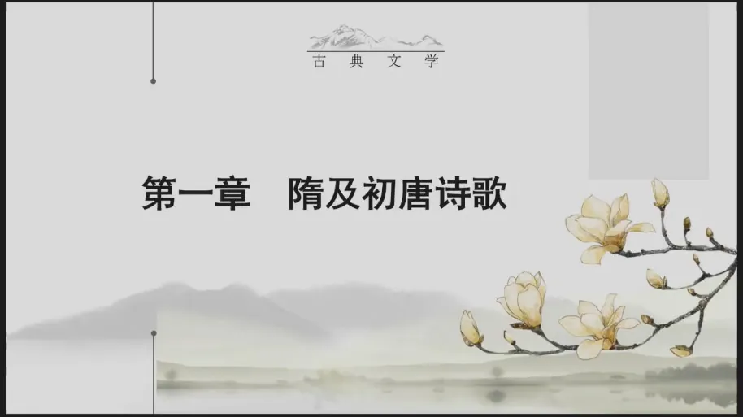
（一）本章要解决的五个问题 01:10:17–01:13:56
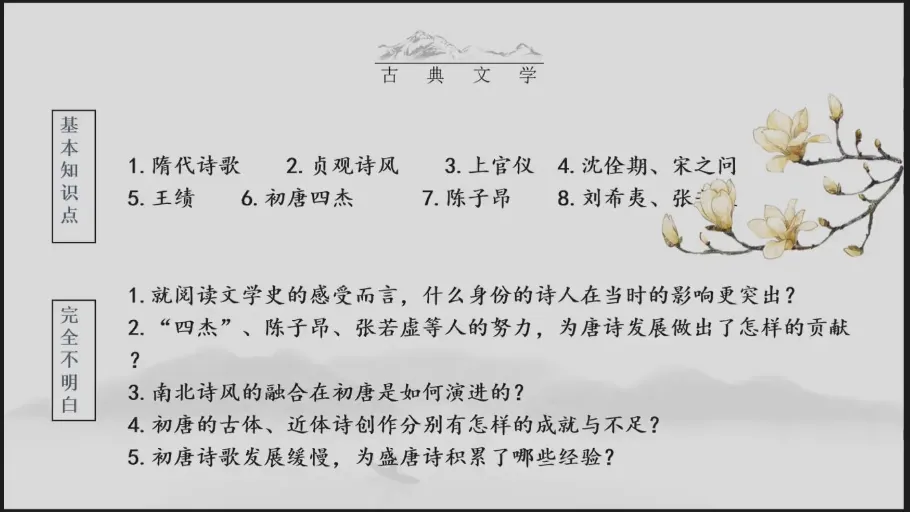
01:10:17–01:13:56所以我们接下来，我们就先来看这个隋及初唐的诗歌。因为前面跟大家提到了，隋代的文学存在的时间实在是太短了，所以我们就把它和初唐文学关联在了一起。
那么在学习这段文学史之前，有几个点我们提示大家一下。这样的一个构架的 PPT，我可能每一次讲的、过段时间换一个新的话题都会呈现，所谓的〔原音不清〕里边每一个时段的代表的主要的代表的作家、他的字号、他的重要的代表作，我们文学史上都提及了，这是大家一定要掌握的基础知识，它构成了你文学史学习的一个重要的基础。所以这部分的内容请大家自行完成。你看看文学史很快就掌握了。
那我们在课堂上要解决的问题是什么呢？我们来看这么几个问题：
一个，其实大家去读一读文学史，你们就会发现在初唐文坛上所出现的这些诗人，他们的身份上的差异是很明显的。所以就阅读文学史的感受而言，什么样身份的诗人在当时的影响更突出？大家注意是在当时的影响更突出，不代表他在后世的接受过程中依然被认定为是诗坛的名家。
好，第二个问题，我们来看。文学史之中，对于讲解初唐四杰、陈子昂、张若虚等人讲的比较的多，他们都是属于初唐中后期的一些代表。好，他们为唐诗的进一步的创新发展做出了重要的努力。他们的这个努力的贡献主要是指什么？我们文学史上提到了，但是提到了之后，我们大家要做一个联系和比较的工作。你比如说四杰和陈子昂，他们都被视为是唐诗的革新者，但是他们革新的方向、方式有什么不同？这是我们要关注的。
好，我们再来看，又回到了我们上节课最初讲到的那个命题：大一统的时代首先来到了，我们可以在军事和政治上首先实现了大一统，但是在思想和文化、文学的创作之中，怎么来实现这种融合呢？南北文风的这种融合，他在初唐是如何演进的？你看，这相对就是一个比较抽象的问题了，所以你就要借助一些文学现象的分析来探索它的这个本质。
好，最后一个问题，我们来看，初唐时期，这是一个古体进一步的发展、律体定型并且被尝试普遍使用的这么一个重要的时期。所以这个时期古体和近体诗的创作分别取得了怎样的成就？而且出现了什么样的不足？所以我们对一个问题的认知要全面，不能说一味的肯定，那么也要慢慢的发现他的客观的认知，他发现他的一些内在的不足。
好，我们接下来对于初唐文学的讲解，主要就是围绕这几个问题展开。最后还有一个：百年徘徊的初唐诗歌，那么为盛唐诗积累了哪些经验？其实第五个问题就是对前面的几个问题的一个总结，前面几个问题如果是解决了，那最后一个问题也迎刃而解了。
（二）课堂提问：南北文风的差异与融合 01:13:56–01:20:38
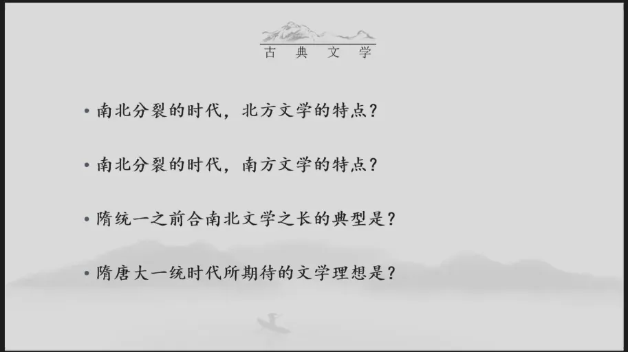
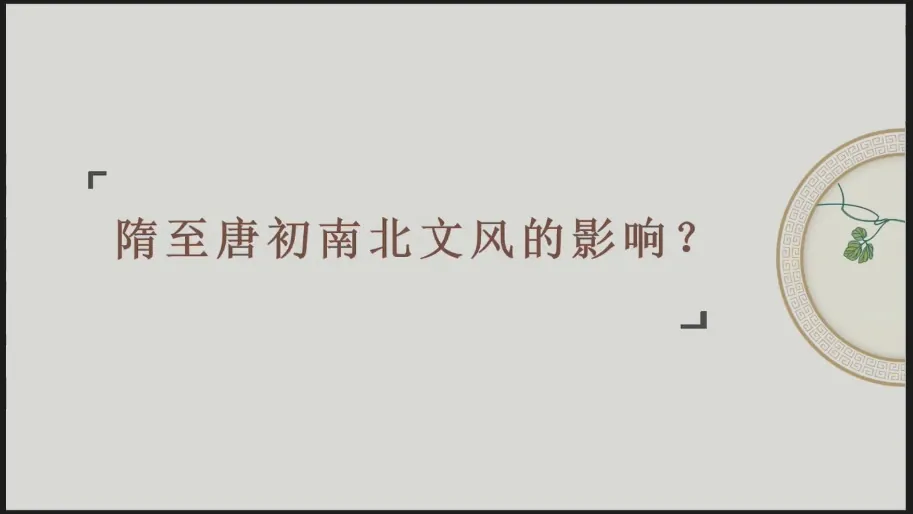
01:13:56–01:20:38好，那接下来我们就来看。还是先给大家提几个问题，问题连问题。
我们不妨回忆一下，其实南朝六朝时期，特别是南朝文学的发展，它和唐代文学的关系是非常之紧密的。那我们大家不妨就回忆一下，在上个学期学习到了南朝文学的时候——南北朝文学在南北分裂的这个时代，北方文学的特点是怎样的？那大家能想到什么样的关键词来概括北方的文学？
比如说大家应该都熟悉《木兰辞》。你们看《木兰辞》它代表了怎样一种风格？《水经注》，《水经注》的篇章也入选过初中语文教材，《木兰辞》也是我们初中语文教材要学的篇章。结合这样一些大家有经验性的东西，你们看看北方文学的特点是怎样的？如果让你用几个关键词来概括，你会想到什么？有同学如果有想法，不妨就提出来。你们会想到什么？
你看《木兰辞》写的是什么？代父从军，表现的是什么？女子的一种英雄的气概，是不是很刚健的一种气质？对不对？《水经注》这是一个地理志，它是很质朴的，你看以前入选语文教材的这个《三峡》篇，它其实就是文献资料的一个转载，因为他自己是没有办法亲身去考察、去体验这个三峡的。所以北方的文学它相对是刚简质朴的。
那我们再来看，在南北分裂的时代，南方文学——宋齐梁陈，南朝的四个小朝廷，他们的文学的特质又是怎样的呢？这个我们刚才上课的时候已经提到过了，讲求什么？讲究什么？语言上它的华美雕琢，是不是？语言上的华美雕琢。但是在内在的内容、精神气质上它是缺乏的。所以你看齐梁的宫体诗，宫体诗它就仅限于描写宫廷之中，特别是以女性为核心，以及和女性相关的一些宫廷的生活环境，所以很纤弱的一种生命力，题材非常的狭隘。
好，我们再来看这个问题。在隋统一之前，我们在文学史的讲解中曾经讲到过，有一个合南北文学之长——就是他既擅长这种华丽的修辞，也写得了这种浮靡的诗风，同时他的诗歌之中又体现了一种刚健质朴——这样的一个文学典型是谁呢？感觉你们好像南北朝文学都没学一样。有没有印象？以前上课有没有提到过庾信？这么重要的人物，大家一定要知道，他是杜甫的偶像。
这个庾信的生平大家有了解过吗？他最初是南朝梁朝的外交使者，他被派往了出使北地。他这个出使访问的任务还没完成，梁朝就灭亡了，所以他成了一个亡国之臣。再加上当时北方缺乏这些文坛的执政、这个执牛耳者，所以当时干脆北朝就把庾信扣留下来了。他后来晚年就是在北方度过的。所以庾信他本来是南朝宫体诗的一个重要的创作者，又擅长运用永明体写作这种宫体的题材，结果后来到了他中晚年之后，就被羁留在了北方。羁留在北方之后，你看一个是经历了亡国的之痛，有家难归；第二个是被长期居留在了异乡，所以有点望乡之思。所以他后期的这个诗风，就有前期的那种华丽浮靡、只是追求这种修辞，转到了后期变得深沉厚重起来了。为什么杜甫喜欢他？就是这个原因。
所以你看，这是隋代统一之前，合南北文学之长的一个典型。但是大家看，庾信这个典型，它是由于时代的外因、突发的这个时代的意外因素造成的，是不是？如果说没有经历这样的一个亡国，或者说他没有被长期的扣留在北方，他的诗风未必会发生这样的变化。也就是说，对于庾信来说，这种合南北之长，它不是一个自觉的行为，是在时代的影响下所发生的文学风格的突变。
那么在文学史上，这样的例子不仅庾信。大家可以回想一下五代时期的李煜。李煜你们都熟，你看他也是一个亡国之君，前期写的都是很华美的艳情文字，到了后来就把他的亡国之思、对于家国的这种思念、痛苦的反思、深沉的这种反思，都寄寓到了词作之中，对不对？词风上的这种变化、题材上的变化，这是时代的外因造成的。所以这样的一些案例它可能是突发的，因为它不是一种自觉的意识，所以它就没有形成了一种潮流。
因此当隋唐大一统的时代来到之后，其实并没有快速的出现融合了南北文风的一种新气象、一种新文风。但是人们已经在理论上期待了：希望在大一统出现的一种文学理想是什么呢？简单的讲就是融合南北之长，南方文学的优势和北方文学的优势把它给融合起来。说说很容易，理论上的建构是这样的，但是在实际的操作之中，你怎么来进行融合呢？这是唐代的诗人所面临的一个重要的命题。
好，所以我们就来看，从隋至唐初南北文风所产生的影响是怎样的。
（三）隋代诗歌：南北两种诗风并存 01:20:38–01:24:05
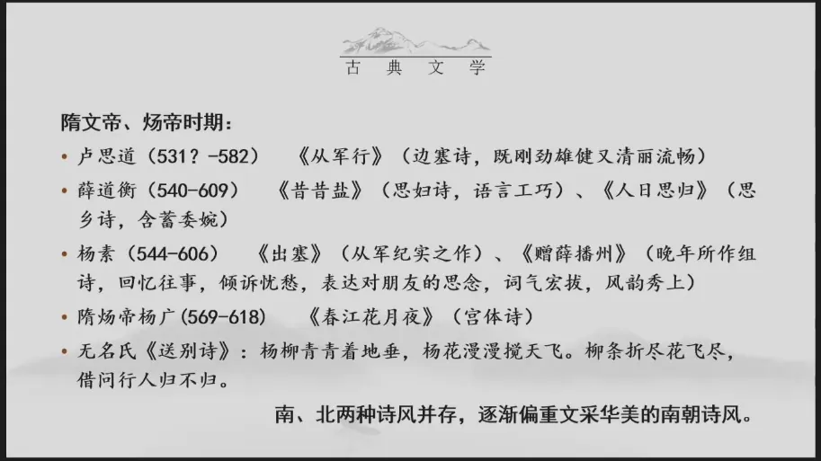
01:20:38–01:24:05那么在隋代，隋代的文学，它是这样的一个特点。隋朝出现的两位大诗人，一个叫做卢思道，一个叫做薛道衡。
那么卢思道他曾经写过《从军行》，因为他有实际的带兵打仗的经历，所以他的这一首《从军行》属于边塞的题材。你看，因为他有实战的经验，所以他就能把一些个人的真实的这种感慨寄寓到了诗歌之中。所以卢思道的这一首《从军行》是既刚健又清丽。
而薛道衡，他则是保持了南朝文学的这种浮靡华丽的倾向。所以他的《昔昔盐》，这是一首思妇诗，语言工巧；《人日思归》，这个人日指的就是正月初七，初七人日思归，这时候他羁留在外，这个忧患之时，所以他在人日这个日子产生了这个思乡之情，也是一种含蓄委婉之态。
好，那我们再来看杨素。这也是隋代的一位执政之臣，他和那卢思道一样，也曾经有过实际征战的经验。你看杨素有一首诗叫做《出塞》，《出塞》就比《从军行》写的更刚健，他就是完全的从军纪实之作，保持着一种质朴之态。晚年的时候，他给这个薛道衡写了一组诗，叫做《赠薛播州》，回忆往事，表达对于朋友的思念。
我们这样的简单的介绍，其实大致大家有一个印象，就是隋朝的这个文学，它虽然在地域和政治上实现了大一统，但是其实从创作上，他就是有些人还是保持了南朝的文风，有些人则是倾泻了一种北朝的这种质朴和刚健，就是不同的人群他表现出来的这种文学风格是有差别的。
那我们再来看，隋炀帝杨广曾经创作过《春江花月夜》，因为隋炀帝也是一个亡国之君，所以这个《春江花月夜》有一段时间就被誉为是靡靡之音，就是这个会给人带来一种这种不好的情思的这么一个靡靡之音。那我们再来看隋代的时候，还有所谓的无名氏所作的《送别诗》。你看《送别诗》，这首送别诗写的其实意境很美、很缠绵、很婉约：柳条折尽花飞尽，借问行人归不归。
好，所以这就反映了，尽管在隋代的地和政治上实现了大一统，但是在文学创作的领域，它还是两种诗风并存，他不是那么快的就可以交融到一起。所以这也反映出了一个问题：就是社会的发展和文学的发展，它有时候并不是完全统一的。你看这个时候社会的发展是大一统的状态了，但是文学的发展它还是滞后，还是南北并峙的一种状态。而且从上层的统治者再到他身边的这些重臣，他们所写作的这个诗歌风格的倾向来看，偏重华美、文采华丽的这个南朝的诗风它是占有主导的。这个时候还是更多的人擅长的是去写这种文采华美的南朝诗风的诗歌。
（四）唐初：魏征的文学理想 01:24:05–01:27:46
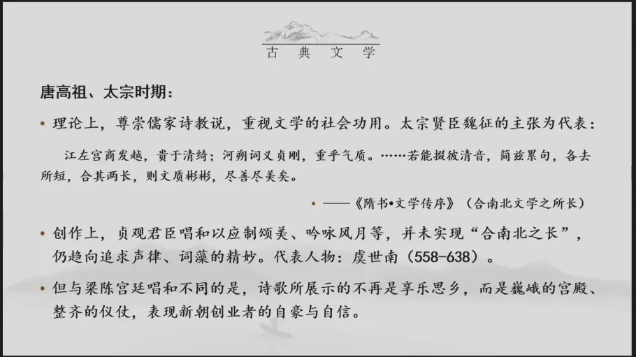
01:24:05–01:27:46好，我们接下来看啊，进入到了唐代太宗、高宗时期，李渊、李世民的时代。这个时候在李世民的身边就出现了一位重要的贤臣魏征。魏征他就提出了一个重要的理论，他开始重视到了文学的这种社会的功用，这是传统的儒家的一种诗教。他最初建立这个国家的文化政策的时候，是一定要提到这一点的。
所以在这个《隋书·文学传序》里面，魏征就讲：江左——这就是指的南朝的文学——说他是宫商发越，贵于清绮。魏征用“清绮”两个字，清丽而且华美，来形容南朝的文学。河朔，这是指北方地区，说它是词义贞刚，重乎气质。你看，一个是它比较刚健，再一个他写的比较的实，他不追求形式上的华美，他是重视这个内容。
那么这个时候他讲“若能掇彼清音，简兹累句”，就是说如果我们把这种北方文学的这种生命力注入到了南方文学，减少一点修辞——你看，减少修辞，减少那些华美的东西——各去所短，合其两长，那也就是说把这种清绮和这种贞刚气质结合起来，则文质彬彬，尽善尽美矣。所以这是魏征提到的他的一个文学理想。
所以可见这个时候是理论很超前的，先从这个宏大的构想上，对这个文学发展的方向提出了一个理想的状态和目标：文质彬彬，尽善尽美。但是在创作的领域，是不是真的实现了文质彬彬、尽善尽美呢？事实上即使到了贞观年间，就是太宗时期，李世民的时代，贞观时期，这个太宗和他的文臣们的唱和依然是以应制颂美、吟咏风月为主。所以其实虽然理论上提出了这样的一个宏大的构想，但是在创作上没有真正实现所谓的合南北之长，依然趋向的是追求声律、词藻的精妙。所以在这方面有一个重要的代表人物是虞世南。虞世南是由隋而入唐的一个旧臣，他就是很典型的太宗时期的一位宫廷诗人，擅长这种宫廷应制之作。
但是唐初的这种宫廷的君臣唱和，和齐梁时期的君臣的宫廷唱和，依然表现出了不同的内质。这种内质就在于：齐梁之间的宫廷场合，真的是没有什么实际、很深层的内容，不扎实，他就是追求一种形式的华美；而在唐太宗贞观年间的这些君臣唱和，他们歌唱的是什么呢？是宏伟的宫殿、整齐的仪仗，其实就是表现了一种百废待兴的一种自豪感和信心，就是面对这个大一统时代表现出来的一种自信感。所以这是新朝创业者的一种自豪和自信。所以大家看，形式上相似，但是精神的内质已经发生了变化。所以这也意味着，即使他们依然追求声律辞藻，但是这个时候文学创作的精神已经开始转变了。
（五）上官仪与“上官体” 01:27:46–01:32:33
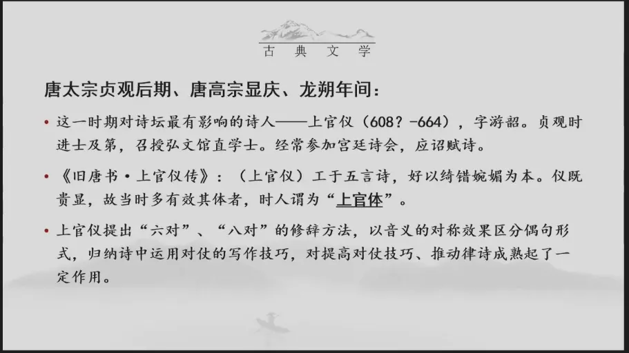
01:27:46–01:32:33好，我们接着再来看。继太宗朝之后，在贞观的后期到唐高宗显庆、龙朔年间，这个时候文坛上出现了一位具有影响力的诗人上官仪。上官仪有一个著名的孙女叫做上官婉儿，大家可能对上官婉儿更熟悉。他后来这个上官仪，他是武后的坚决的反对者，就是他是支持这个李姓家族、反对这个武后，所以他后来就遭到了这个武则天的迫害，就被杀了。他家中的这些亲人就是被纳入了这个〔掖庭〕之中，官府的奴婢，所以上官婉儿就以这样的身份成为了武则天身边的侍女。
但是上官婉儿才情很高，你看她的爷爷就是诗坛这么具有影响力的，也是，所以他在陪伴武则天的时期，就成为了武则天身边重要的文官。武则天也非常的重视君臣之间的诗词唱和，所以唐代的时候，就是君臣之间的这种唱和所创作的诗歌，我们有一个专门的说法叫做应制诗。这个应制诗就是命题作文，给你一个韵或者是一个主题，你围绕这个写作。当时的这些大臣写好这些应制诗之后，谁来评判呢？上官婉儿来做一个评判。所以这是《唐诗纪事》里曾经记述到的情景。
这是我们插播了一个另外的一个话题，我们回到了上官婉儿他的爷爷上官仪的身上。上官仪就是贞观年间进士及第，后来就被召授弘文馆直学士。这个弘文馆，这就是当时的文臣聚集的很多的这种文臣的精英聚集的地方。所以他经常会参加一些宫廷的诗会，应诏赋诗。
在《旧唐书》之中记述到了上官仪的当时的影响，说他一个是工于五言诗，五言写的很好，他的五言的特点是绮错婉媚。你看，以绮错婉媚为本，说明他自觉追求的就是这样一个东西。那绮错婉媚：绮就是华丽了，错就是声调的这种曲折，就是既讲究声律又讲究辞藻，呈现一种婉媚之态。所以上官仪所崇尚的依然是南朝的诗风。因为他在当时的政治地位非常的显贵，因此在文坛上也带来了极大的影响，故当时多有效其体者，时人谓之上官体。你看他的诗歌盛行于一时、风靡于一时。但很可惜他流传后世的诗歌不足二十余首。所以你看，文学的这个发展演变过程之中，接受史和文学当时发展的状态之间也是有明显的差别的。
好，那我们再来看。因为上官仪他追求绮错婉媚，讲究这种声律。声律它又和对偶、又和对仗是关联在一起的，所以在对仗的这个经验方面，上官仪曾经提出过六对、八对的修辞方法，就是对于这个诗歌之中对仗经验的一个总结。它讲究的是以音义的对称效果来区分偶句的形式。我们可以简单的理解为，就是名词对名词、动词对动词，两个字、比如说动宾的结构，那就对两个字动宾的结构，所以这是音义对称的一种效果。
好，那么以此来归纳诗歌之中运用对仗的写作技巧，大家注意这一点，经验非常的重要。因为在格律诗的写作过程中，对仗是必然要使用的技巧，必须用。所以上官仪他相当于是把对仗的艺术经验做了一个理论性的总结，概括为六对、八对。所以归纳了诗歌之中的运用的这种对仗的写作技巧，那对于提高对仗技巧、推动律诗的成熟起到了一定的作用。
好，大家注意他是一位宫廷诗人，律诗这种诗体首先是在宫廷诗人的手中成熟并流行的。好，当然这个定型者不是上官仪，但是他为这个体式定型其实也起到了关键的作用，他总结了这个对仗的经验。
（六）高宗武后时期与宫廷诗人 01:32:33–01:34:26
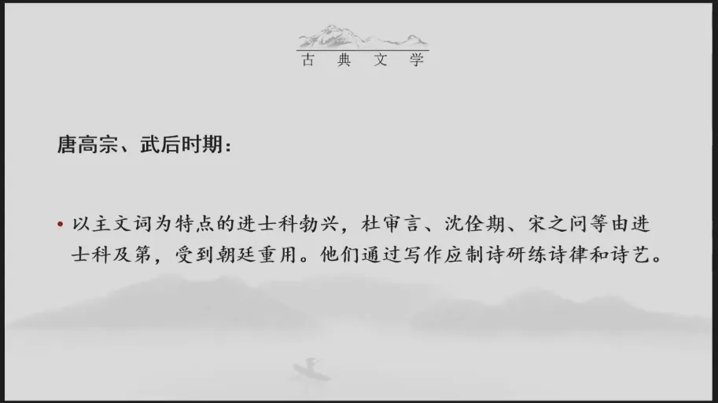
01:32:33–01:34:26我们再来看，到了高宗武后时期，这个时候因为武则天她是非常支持进士科的，通过进士科她也选拔了大量的人才，所以以主文词为特点的进士科勃兴，像杜审言、沈佺期、宋之问等人，他们就由进士及第而受到了朝廷的重用，同时也通过写作应制诗来研练诗律和诗艺。
这个杜审言他是杜甫的爷爷。后面我们提到的这个沈佺期、宋之问，这就是对于格律诗定型做出了重要贡献的两位宫廷诗人了。
好好，所以在这里我们可以看出，在唐代的前期，我们刚才讲述基本上都是围绕京城、宫廷而展开的，这说明在唐代的前期，有一个非常重要的诗歌的创作的中心，就是京城宫廷。
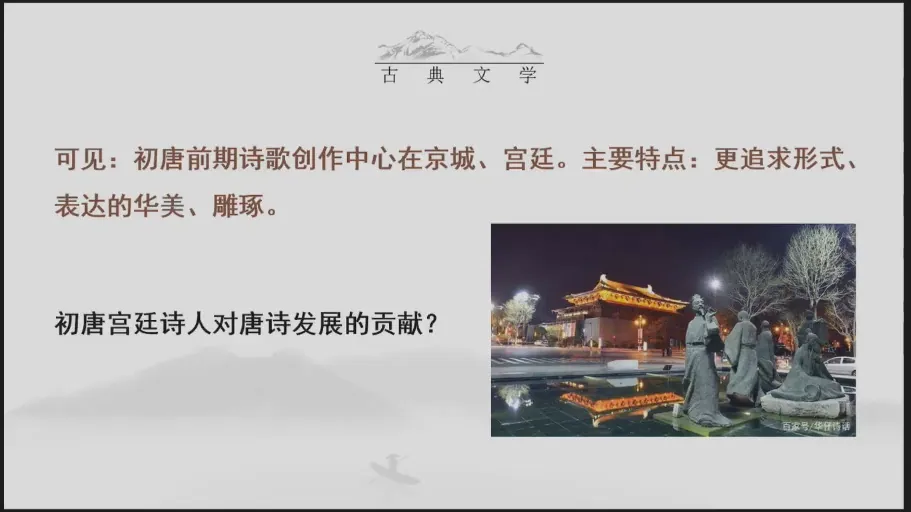
而在京城宫廷之中所形成的这一批宫廷诗人，无论是上官仪，还是后面我们提到的杜审言、沈佺期、宋之问等人，他们的特点就在于延续了南朝的诗风，更重视追求一种形式去表达，这样的一种表达的华美和雕琢，就是他们在诗歌的形式方面所做的探索，所取得的成就要更高。
所以这里就引发了一个问题：这些、这一批初唐的宫廷诗人，他们对于唐诗的发展究竟做出了怎样的贡献呢？
我们今天先讲到这里，明天我们沿着这个问题来继续讲解。我们今天先下课。
附：本稿中保留的存疑之处
按“最小改动、不能判断则保留”的原则，以下位置原音不清或语意不明，一律保留原貌并以〔〕标注，未作臆改。如需进一步核实，建议回听对应时间点的音频。
| 段号 | 时间点 | 原文 | 说明 |
|---|---|---|---|
| 0177 | 00:10:28 | 还沉浸了南下南巡视察 | “沉浸”疑为讹误，语义上应近“多次南下巡视”，但无法确证，保留原词 |
| 0402 | 00:22:09 | 我是转述 | 原作“我是转眼”，依上下文语义推补为“转述”，仍标存疑 |
| 0853 | 00:46:07 | 提到了〔原音不清，存疑〕 | 该处四个音节无法辨识，保留标注 |
| 0982 | 00:57:32 | 它是一个中唐的批评的诗话 | 语意不明，疑为“推崇盛唐的批评”或“针对唐代的批评”，未敢径改 |
| 1009 | 00:58:48 | 后乃〔觭〕重诗赋 | 《唐音癸签》罕见字 |
| 1016 | 00:59:06 | 你看我〔原音不清〕就感慨 | 该处音节无法辨识，保留标注 |
| 1089 | 01:03:00 | 早期的这个词〔牌〕 | 原作“磁盘”，依后文《浣溪沙》例推补，仍标存疑 |
| 1233 | 01:10:46 | 所谓的〔原音不清〕里边 | 原作“所谓的G里边”，字母为识别噪声，保留标注 |
| 1577 | 01:28:23 | 被纳入了这个〔掖庭〕之中 | 原作“嗯无忌”，依上官仪家口没官史实推补为“掖庭” |